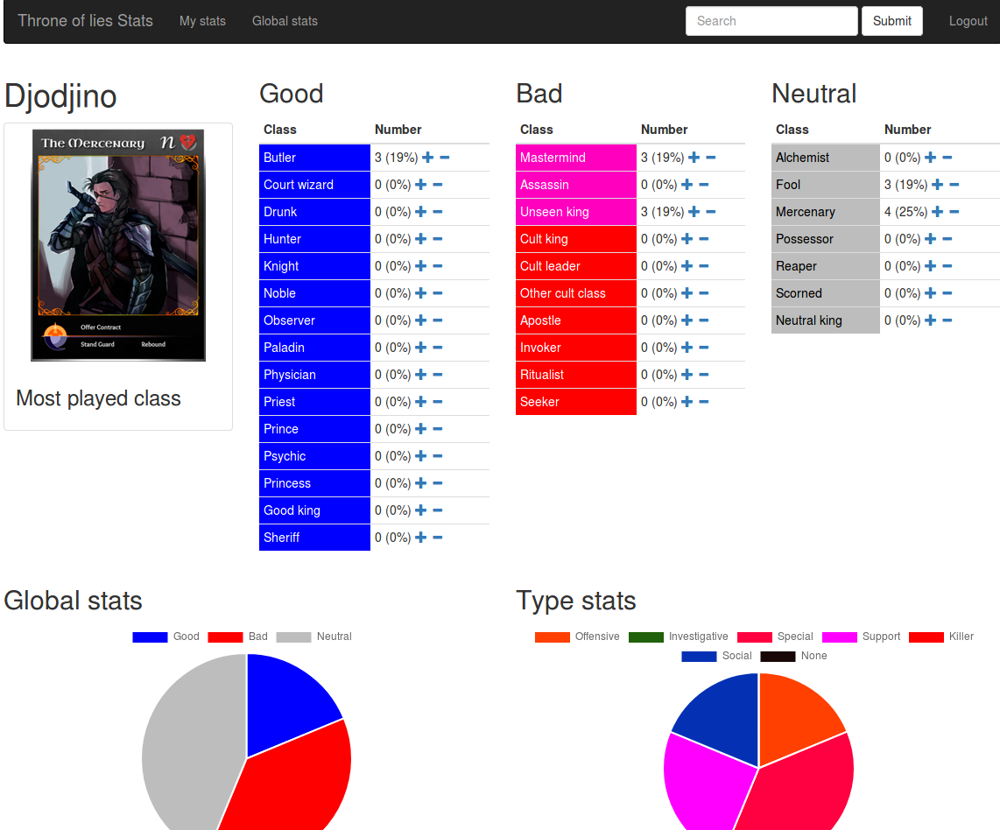

Hi everyone.
I’ve just did a small website to log your stats about the differents classes. I’ve added a page to display the global stats so we can have fun info about the differents classes.
For the moment there are just a few stats available but I think I’ll had some later.
It’s missing a lot of things and the code is not optimized but the security part is fine. The project is open source so everyone can check that it’s clean and the email used for the registration is just use for having an unique identifier (so later you’ll be able to change your username). You can even use a yopmail adress I don’t care, I’ll not use them to send mails. (code here : https://github.com/jocelyndubois/tolstats)
The website is accessible here : http://tolstats.jocelyn-dubois.fr/
You can check what a personnal stat page looks like by searching for “Eau Minerale” in the search field. And after you’ve register, y’oull be able to log you own stats.
ATM the website uses the wiki images, but if the devs want me to remove them, i’ll do it as quick as I can ! 
Hope you’ll enjoy
EDIT : After posting this message on discord, my server died in like a minute 
I hope he’ll be back soon. I’ll post a screenshot of the render to show you how it looks like.
